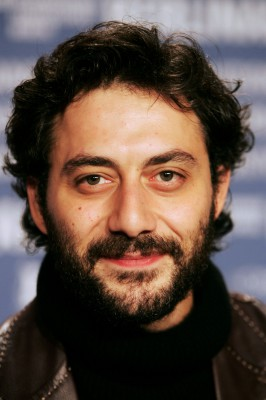

#5511 Engel des Bösen - Die Geschichte eines Staatsfeindes
Alternativ: Angel of Evil (Englischer Titel)


 IMDB-Wertung: 6.8 / 10
IMDB-Wertung: 6.8 / 10  Metascore: 0
Metascore: 0 
ENGEL DES BÖSEN - DIE GESCHICHTE EINES STAATSFEINDES erzählt die wahre Geschichte des wohl berühmt-berüchtigsten Gangsters Italiens. Renato Vallanzasca, der bereits im Alter von 9 Jahren Straftaten beging, wurde noch vor seinem 27. Lebensjahr zum bekanntesten Verbrecher des Landes. Da er dabei stets einen gewissen Ehrenkodex wahrte, wurde er vor allem bei Frauen populär und zu einer Art Gentleman unter den Ganoven. Sein teuflischer Charme gepaart mit einem engelsgleichen Gesicht brachte ihm sogar den Spitznamen „il bene René“ („der schöne René) ein.
Jahr: 2010
Dauer: 128 Minuten
FSK: 16
Land: Italien Studio: 20th Century Fox of GermanyTonspuren:
Untertitel: Deutsch,
Auflösung: 1080p (1920x816) Größe: 11059 MB
Genre: Thriller, Drama, Krimi, Biographie
Regisseur: Michele Placido
Drehbuch: Adrian Finkelstein
Soundtrack:
Darsteller:
- Kim Rossi Stuart als Renato Vallanzasca
-  Filippo Timi als Enzo
- Valeria Solarino als Consuelo
 Moritz Bleibtreu als Sergio
Moritz Bleibtreu als Sergio Paz Vega als Antonella D'Agostino
Paz Vega als Antonella D'Agostino- Francesco Scianna als Turatello
- Lino Guanciale als Nunzio
- Nicola Acunzo als Rosario
- Stefano Chiodaroli als Armando
- Federica Vincenti als Giuliana
- Monica Barladeanu als Nicoletta
- Antonio Calamonici als Carabiniere Traghetto Appuntato 1
- Stefano Fregni als Scaglione
- Sergio Leone als Intervistatore Radio Popolare
- Ivan Olivieri als Agente Custodia Ariano Irpino 2
 Simone Spinazze als Poliziotto Commissario Attico
Simone Spinazze als Poliziotto Commissario Attico- Gaetano Bruno als Fausto
- Paolo Mazzarelli als Beppe
- Giorgio Careccia als Carmelo
- Marica Gungui als Maria
- Gerardo Amato als Padre Renato
- Lorenzo Gleijeses als Donato
- Joseph Scarlata als Sgherro Turatello 2
- Riccardo Cicogna als Sgherro Turatello 1
- Teresa Acerbis als Segretaria
- Enrico Ballardini als Ragazzo Balera
- Matteo Balsamo als Poliziotto Giambellino 2 Guardia
- Ilvea Benatti als Sciura Franca
- Tiziana Bergamaschi als Madre Nicoletta
- Alessandro Bertollini als Premoli
- Gabriele Biello als Figlio Renato 3 anni
- Davide Boschi als Pubblico Ministero '81
- Alberto Brandi als Polizietto Strad. Maresciallo 2
- Giuseppe Bruno als Agente Custodia Bari Comandante
- Adriana Canzoneri als Amica Consuelo
- Rocco Capraro als Carabiniere Traghetto Brigadiere 2
- Egidio Cardillo als Pentito Secondo Processo
- Roberto Cardone als Polizietto Appuntato Lucchesi
- Antonio Carluccio als Detenuto Rivolta Novara 2
- Roberto Antonio Casa als Nino
- Alfredo Colina als Carabiniere Tribunale '79 Maresciallo
- Andrea Corsi als Poliziotto Vetra Appuntato Preoccup.
- Luciano Curreli als Carabiniere Colonnello Fassi
- Enzo Cusmà Piccione als Texano
- Maurizio D'Agostino als Avvocato Turatello
- Savino Danaro als Boss Nuovo Camorra
- Adriana De Guilmi als Madre Renato
- Francesca De Martini als Madre Giuliana
- Vincenzo De Michele als Agente Custodia Bari Brigadiere '72
- Rocco Di Gregorio als Agente Custodia Bari Ingresso Appunt.
Datei: X:\2010(A-F)\Engel des Bösen - Die Geschichte eines Staatsfeindes (2010, FSK16, 1920x816).mkv seit 13.02.2017
Festplatte: HD 2009(G-Z)-2010(A-F)
 Es gibt insgesamt 95 Filme in der Gruppe '2010(A-F)'
Es gibt insgesamt 95 Filme in der Gruppe '2010(A-F)'